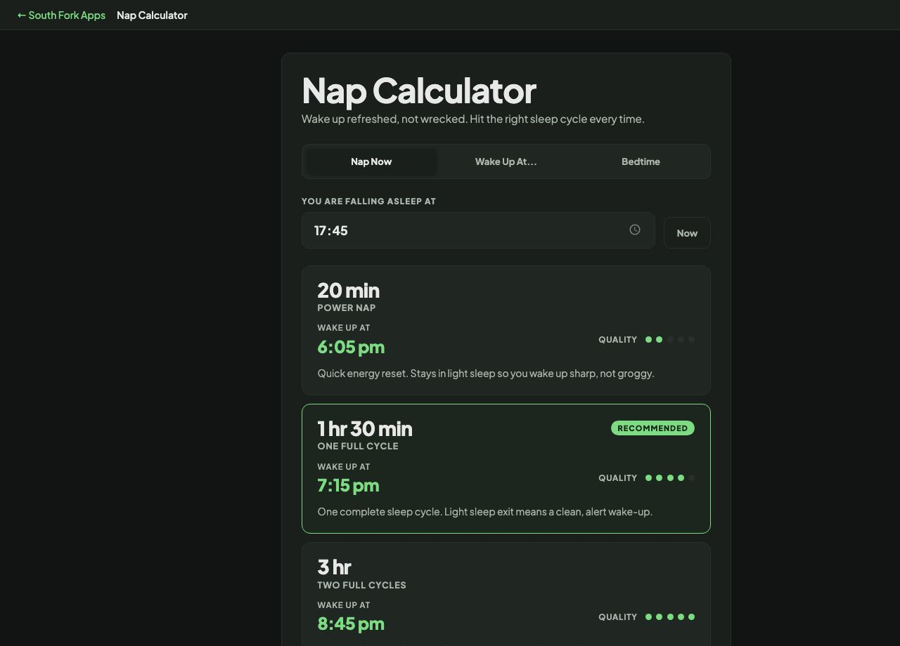

Nap Calculator
Wake up refreshed, not wrecked. Hit the right sleep cycle every time.
Nap Calculator
Nap Calculator works out nap lengths and wake times built around sleep cycles, so you wake at a point that leaves you refreshed rather than groggy.
How to use it
- Enter the time you expect to fall asleep.
- Read the suggested nap lengths and wake times.
Why nap length matters more than nap timing
A full sleep cycle runs roughly 90 minutes, moving from light sleep into deep sleep and then into REM. Waking during deep sleep produces sleep inertia, the heavy disoriented feeling that makes a nap feel counterproductive.
That gives two safe windows. A nap of 10 to 20 minutes stays in light sleep and restores alertness with no grogginess. A full 90 minute cycle completes and ends in light sleep again. The 30 to 60 minute range is the one to avoid, because it wakes you in the middle of deep sleep.
Worked example
Falling asleep at 2:00 pm:
- Power napwake around 2:20 pm
- Avoid2:30 to 3:00 pm
- Full cyclewake around 3:30 pm
Result: Twenty minutes or ninety. The middle is where the grogginess lives.
When it helps
- Planning a nap that helps rather than leaves you worse.
- Working out when to set an alarm for a short rest.
- Timing rest around a shift or a long drive.
- Understanding why some naps work and others do not.
Common mistakes
- Napping in the 30 to 60 minute window, which reliably produces grogginess.
- Napping late in the day, which eats into the sleep pressure you need at night.
- Counting on a nap to replace a night of sleep. It restores alertness, not the full function of proper sleep.
What this tool handles
- General information, not medical advice. Persistent daytime sleepiness is worth discussing with a doctor.
